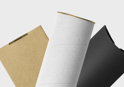
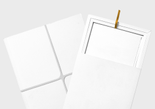

-

v.1
Результат вашего обучения
-

v.2
Результат вашего обучения
-

v.3
Результат вашего обучения
Максимальная белизна
Для повышения белизны, гладкости и мягкости в состав бумажной массы вводят белые минеральные вещества: мел, тальк, каолин и др. Эта операция называется наполнением. Отлив бумажного листа осуществляют на бумагоделательной машине, важнейшей частью которой является непрерывно движущаяся (как транспортер) металлическая или капроновая сетка.
-

Упаковка
Тираж: от 50 штук
Сделано из крафт-бумаги или плотного картона. Упаковки имеют различные формы и расцветки, изготовим форму под заказ.
Подробнее -

Пакеты
Тираж: от 200 штук
С прямоугольным дном. От 10 см до 60 см по высоте. Материалы: картон, крафт-бумага. Различные расцветки и дизайн.
Подробнее -

кейсы
Тираж: от 30 штук
Подойдет для документов и других бумаг. Различные расцветки, размеры и плотность. Материал: прессованная бумага.
Подробнее -

Другие изделия
Тираж: от 100 штук
Нестандартные упаковки, кейсы и другие изделия различных размеров и конфигураций. Изготовим в кратчайшие сроки.
Подробнее

Simple скетчбук
80 листов, твердая обложка, бумага Fabriano 200г/м2. Подойдет и для графики и для акварели. Для самых смелых творческих замыслов!
Купить